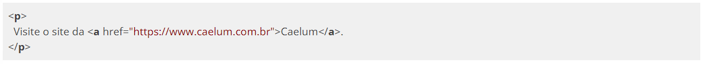
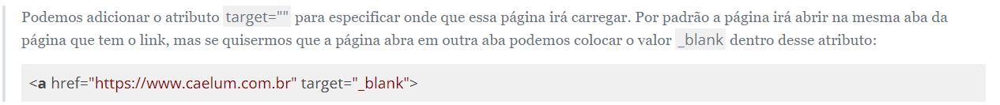
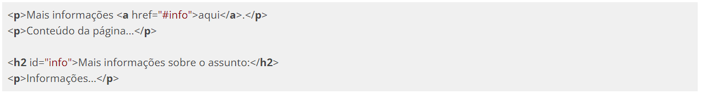

Não são raros os casos em que queremos exibir uma listagem em nossas páginas. O HTML tem algumas tags definidas para que possamos fazer isso de maneira correta. A lista mais comum é a lista não-ordenada definida pela tag <ul> (unordered list).
Note que, para cada item da lista não-ordenada, utilizamos uma marcação de item de lista <li> (list item). No exemplo acima, utilizamos uma estrutura composta na qual o segundo item da lista contém uma nova lista. A mesma tag de item de lista <li> é utilizada quando demarcamos uma lista ordenada.
As listas ordenadas (<ol> - ordered list) também podem ter sua estrutura composta por outras listas ordenadas como no exemplo que temos para as listas não-ordenadas. Também é possível ter listas ordenadas aninhadas em um item de uma lista não-ordenada e vice-versa.
Listas de definição
Existe um terceiro tipo de lista que devemos utilizar para demarcar um glossário, quando listamos termos e seus significados. Essa lista é a lista de definição (definition list).
Para estilizar o formato padrão das listas ordenadas e não-ordenadas, podemos utilizar a propriedade list-style-type no CSS:
Links no HTML
Quando precisamos indicar que um trecho de texto se refere a um outro conteúdo, seja ele no mesmo documento ou em outro endereço (por exemplo uma página na web), utilizamos a tag de âncora <a>.
Existem três diferentes usos para as âncoras. Um deles é a definição de links:
Existem três diferentes usos para as âncoras. Um deles é a definição de links:

Note que a âncora está demarcando apenas a palavra Caelum de todo o conteúdo do parágrafo exemplificado. Isso significa que, ao clicarmos com o cursor do mouse na palavra Caelum, o navegador redirecionará o usuário para o site da Caelum, indicado no atributo href.

Outro uso para a tag de âncora é a demarcação de destinos para links dentro do próprio documento, o que chamamos de bookmark.

De acordo com o exemplo acima, ao clicarmos sobre a palavra aqui, demarcada com um link, o usuário será levado à porção da página onde o bookmark info é visível. Bookmark é o elemento que tem o atributo id.
É possível, com o uso de um link, levar o usuário a um bookmark presente em outra página.